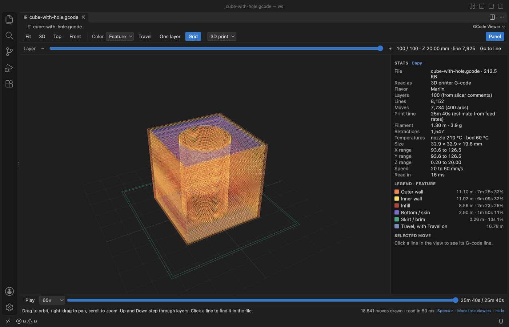
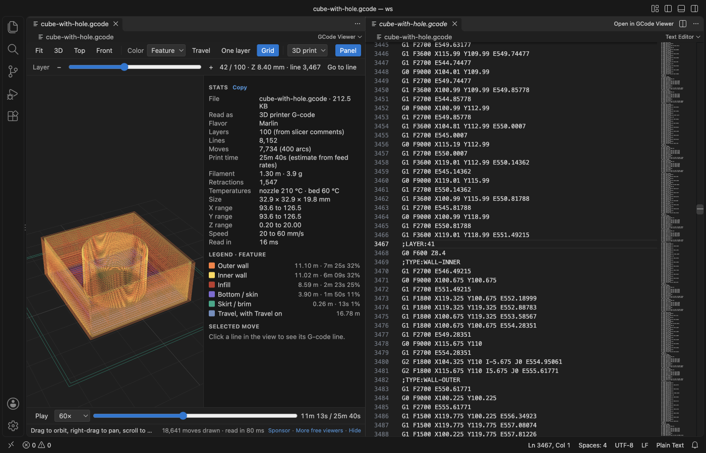
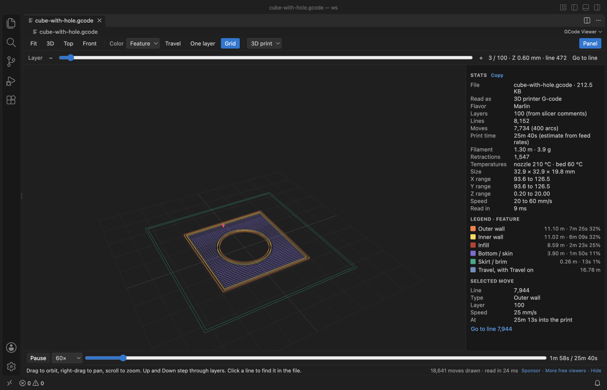
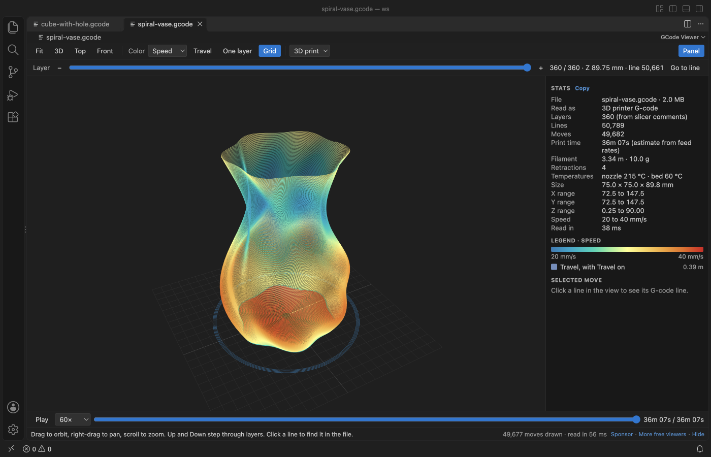
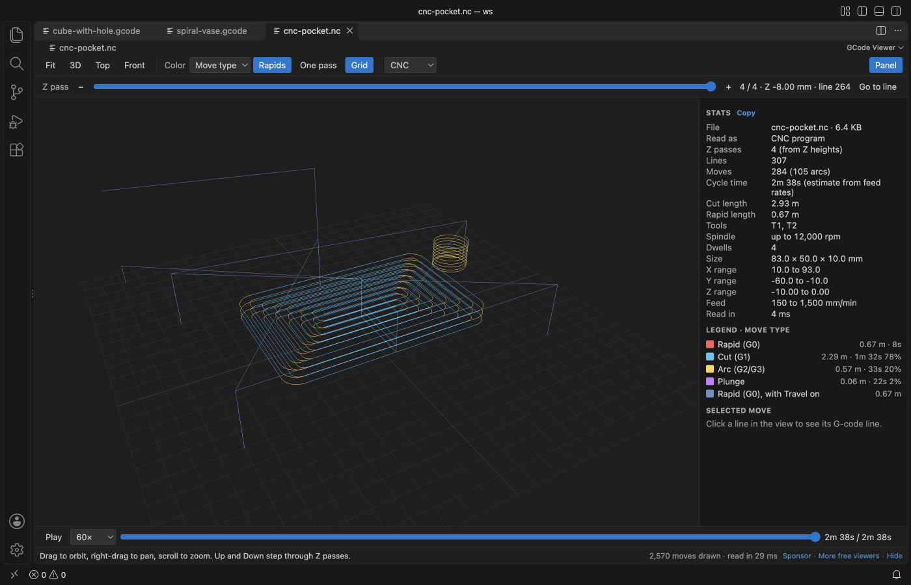

GCode Viewer, CNC Viewer & 3D Print Preview
GCode Viewer, CNC Viewer & 3D Print Preview, a VS Code extension by Zovo
See your 3D printer or CNC G-code as a 3D toolpath in VS Code, layer by layer, and find the exact line behind any move.
Free, MIT license. Needs VS Code 1.90.0 or newer. Extension ID zovo.zovo-gcode-viewer, version 0.1.2.

Screenshot of VS Code 1.142 with a cube print made by scripts/make-samples.js.
- Check a slice before it goes to the printer. Walls, infill, skin, skirt and support each get a color, and the slider steps through every layer.
- Get the print time, filament length and weight, size and speeds from the file itself, next to the slicer's own estimate when the file has one.
- Click any move to see its line number, then open the text at that line. It works for CNC programs too, with G2 and G3 arcs and Z passes.
Quick start
- Install the extension.
- Click a
.gcodeor.gcofile in the Explorer. For.nc,.g,.ngc,.tapand.cnc, right-click the file and pick "Open in GCode Viewer".
Questions people ask
Is GCode Viewer, CNC Viewer & 3D Print Preview free?
Yes. GCode Viewer, CNC Viewer & 3D Print Preview is free and MIT licensed.
How do I install GCode Viewer, CNC Viewer & 3D Print Preview?
Click "Install in VS Code" above, or search for zovo.zovo-gcode-viewer in the Extensions view.
What you can do
| Action | How |
|---|---|
| Orbit, pan, zoom | Drag, right-drag, scroll. Fit, 3D, Top and Front in the toolbar. |
| Step through layers | The Layer slider, or the Up and Down keys. Home and End jump to the first and last layer. |
| Show one layer | One layer (or the S key). |
| Show travel moves | Travel (or T). In CNC mode the button is called Rapids and starts on. |
| Color the toolpath | Pick Feature, Speed or Layer in the Color menu. CNC files offer Move type, Feed rate, Z pass and Tool. |
| Play the print | Play (or Space) draws the moves in order with a nozzle marker, at 1× to 5000× speed. Drag the progress bar to seek. |
| Find a line | Go to line opens the text beside the preview at the first line of the layer. Click a move to see its line, then jump to it. |
| Copy the stats | Copy in the Stats panel. |




What the stats show
- Layers (from slicer comments such as
;LAYER:,;LAYER_CHANGEor; CHANGE_LAYER, or from Z heights when there are none), lines, moves and arcs. - Print time estimated from the feed rate of every move, plus dwells. Acceleration is not modelled, so real prints often take a little longer. When the slicer wrote its own estimate (Cura
;TIME:, PrusaSlicer, OrcaSlicer or Bambu Studio footers), it is shown too. - Filament length from the E axis (absolute or relative) and the weight for the filament diameter and density in the settings.
- Size and X, Y and Z ranges of the printed part, the speed range, retractions and temperatures.
- In CNC mode the cycle time, cut and rapid lengths, the tools and the spindle speed.
CNC mode
.nc, .ngc, .tap and .cnc files open in CNC mode, and so does any file with no extrusion. G0 rapids, G1 cuts, G2 and G3 arcs (I, J, K or R, helical arcs, G17, G18 and G19 planes) and plunges each get a color. Inches (G20), relative moves (G91), G92 and G28 are handled. The slider steps through Z passes. The 3D print / CNC menu reads the file again in the other mode.
NetCDF data files also end in .nc, so GCode Viewer does not take over .nc files by default. To open all your .nc files in it, right-click one, pick "Open With...", then "Configure default editor for '*.nc'..." and choose GCode Viewer. A .nc file that is really a NetCDF data file gets a short message and a button to reopen it in another editor.
Big files
The file is read in a worker thread in 4 MB chunks, so VS Code stays responsive. In the release check a 59 MB file with 1.5 million moves was drawn 2.0 seconds after it was opened, and the workbench never took more than 30 ms to answer while it was read. Files over 500 MB show a message and are not read (setting gcodeViewer.maxFileMB). At most 5 million moves are drawn (setting gcodeViewer.maxMoves), while the stats still cover the whole file. The view reads the file again when it changes on disk, for example after the slicer exports it again.
Settings
| Setting | Default | What it does |
|---|---|---|
gcodeViewer.mode | auto | Read files as 3D print or CNC, or choose per file. |
gcodeViewer.filamentDiameter | 1.75 | Filament diameter in mm for the weight estimate. |
gcodeViewer.filamentDensity | 1.24 | Filament density in g/cm³ (PLA 1.24, PETG 1.27, ABS 1.04). |
gcodeViewer.rapidFeed | 5000 | G0 speed in mm/min for the CNC time estimate. |
gcodeViewer.maxFileMB | 500 | Largest file that is read. |
gcodeViewer.maxMoves | 5000000 | Most moves drawn in 3D. |
gcodeViewer.askForRating | true | Ask for a Marketplace rating after 3 files that opened without an error, on 2 different days. "Later" asks one more time after 7 days, "No thanks" never again. It never asks after an error. Turn it off with false. |
gcodeViewer.showSupportLinks | true | Show the small Sponsor and More free viewers links under the view. |
Privacy
Everything runs on your machine. The extension makes no network calls and has no telemetry. The webview runs under a strict Content Security Policy with no remote scripts, and comment text from the file is shown as plain text. The G-code file is never changed.
Limits
- Lines are drawn 1 pixel wide, not as round extrusion tubes.
- Time estimates use feed rates only, without acceleration, jerk or firmware limits.
- Binary G-code (
.bgcode) is not read. Export plain text G-code from the slicer instead. - Picking a move uses the visible lines, so very dense views can pick a neighbour. Zoom in or use One layer for an exact pick.
License
MIT. three.js is MIT licensed, see THIRD-PARTY-NOTICES.md.
Install GCode Viewer, CNC Viewer & 3D Print Preview
Click the button to open VS Code and install it, or press Ctrl+P (Cmd+P on macOS) in VS Code and run ext install zovo.zovo-gcode-viewer.
Free, MIT license. Needs VS Code 1.90.0 or newer. Extension ID zovo.zovo-gcode-viewer, version 0.1.2.
Source code and issues are on GitHub.
Support this work
If this extension saves you time, you can support the work on GitHub Sponsors. Monthly tiers start at $5, and one-time tiers start at $15. Sponsorship is optional, and the tool works the same without it.